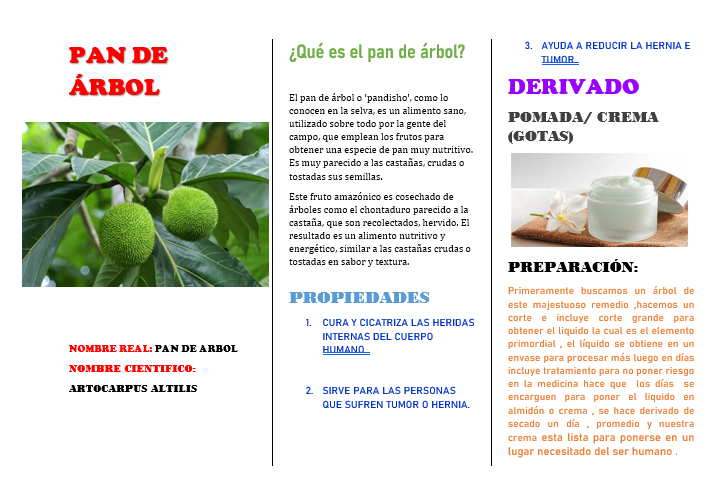

Nombre real:
Pan de árbol
Nombre científico:
Artocarpus altilis
Propiedades curativas:
- 1. Cura y cicatriza las heridas internas del cuerpo humano
- 2. Sirve para las personas que sufren de tumor o hernia
- 3. Ayuda a reducir la hernia y el tumor
Derivados: Pomada/crema (GOTAS)
Preparación:
Pomada/crema: Primeramente buscamos un árbol de este majestuoso remedio, hacemos un corte e incluimos un corte grande para obtener el líquido, que es el elemento primordial. El líquido se obtiene en un envase para procesar más luego en días, incluyendo tratamiento para no poner en riesgo la medicina. Así, los días se encargan de poner el líquido en almidón o crema. Se hace el derivado de secado un día, promedio, y nuestra crema está lista para ponerse en el lugar necesitado del ser humano.
GOTAS: En esta situación, el líquido de nuestro árbol sirve para ponerlo en un envase para gotas. La preparación de consumo es fácil: en una taza, dos gotas del líquido, y en litros, poner dos cucharadas de este elemento primordial para el ser.
